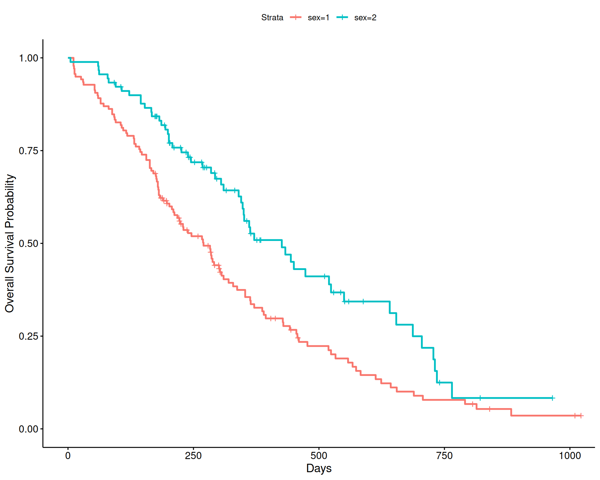

Code
library(tidyverse)
cat_map <- purrr::map
options(max.print = 99999)
options(scipen = 999)
theme_set(theme_light())library(tidyverse)
cat_map <- purrr::map
options(max.print = 99999)
options(scipen = 999)
theme_set(theme_light())county_icc_2level <- function(multi_model){
between <- multi_model$vcov[1]
total <- multi_model$vcov[1] + multi_model$vcov[2]
between/total
}
counties <- function(years){
link <- glue::glue("https://raw.githubusercontent.com/jpedroza1228/dissertation/master/final_data/county{years}_sub.csv")
rio::import(link, setclass = "tibble")
}
county <- map_df(16:20, ~counties(.x))county <- county |>
dplyr::select(
rowid,
state_fips_code:release_year,
poor_or_fair_health:access_to_exercise_opportunities,
preventable_hospital_stays,
some_college:driving_alone_to_work,
food_insecurity:uninsured_children,
median_household_income:percent_rural
) |>
rename(
year = release_year,
state = state_abbreviation
) |>
mutate(
phyact_percent = (physical_inactivity*100),
ltpa_percent = (100 - phyact_percent)
) |>
rename(
access_pa = access_to_exercise_opportunities
) |>
mutate(
smoking_percent = adult_smoking*100,
obesity_percent = adult_obesity*100,
access_pa_percent = access_pa*100,
college_percent = some_college*100,
unemployment_percent = unemployment*100,
driving_alone_percent = driving_alone_to_work*100,
percent_65plus = percent_65_and_older*100,
latino_percent = percent_hispanic*100,
rural_percent = percent_rural*100
) |>
dplyr::select(
-c(
adult_smoking,
adult_obesity,
access_pa,
some_college,
unemployment,
driving_alone_to_work,
percent_65_and_older,
percent_hispanic,
percent_rural,
phyact_percent,
physical_inactivity
)
)
county$year_num <- as.numeric(county$year)
ca <- county |>
filter(
state == "CA"
) library(ggmap)
library(maps)
library(RColorBrewer)
library(ggrepel)
library(plotly)
# display.brewer.all()
us <- map_data(map = "county")
us <- us |>
janitor::clean_names() |>
rename(state = region,
no_name_county = subregion)
us$state <- str_replace_all(us$state, pattern = " ", replacement = "_")
us$no_name_county <- str_replace_all(us$no_name_county, pattern = " ", replacement = "_")
us <- us |>
mutate(state = recode(state, "alabama" = "AL","alaska" = "AK","arizona" = "AZ","arkansas" = "AR",
"california" = "CA","colorado" = "CO","connecticut" = "CT",
"delaware" = "DE",
"florida" = "FL",
"georgia" = "GA",
"hawaii" = "HI",
"idaho" = "ID","illinois" = "IL","indiana" = "IN","iowa" = "IA",
"kansas" = "KS","kentucky" = "KY",
"louisiana" = "LA",
"maine" = "MA","maryland" = "MD","massachusetts" = "MA","michigan" = "MI","minnesota" = "MN","mississippi" = "MS","missouri" = "MO","montana" = "MT",
"nebraska" = "NE","nevada" = "NV","new_hampshire" = "NH","new_jersey" = "NJ","new_mexico" = "NM","new_york" = "NY","north_carolina" = "NC","north_dakota" = "ND",
"ohio" = "OH","oklahoma" = "OK","oregon" = "OR",
"pennsylvania" = "PA",
"rhode_island" = "RI",
"south_carolina" = "SC","south_dakota" = "SD",
"tennessee" = "TN","texas" = "TX",
"utah" = "UT",
"vermont" = "VT","virginia" = "VA",
"washington" = "WA","west_virginia" = "WV","wisconsin" = "WI","wyoming" = "WY"))
county <- county |>
mutate(no_name_county = str_replace_all(county_name, "_county", ""))
visual <- right_join(us, county, by = c("state", "no_name_county"))
ca_visual <- visual |>
filter(state == "CA") |>
filter(no_name_county != "california")
lassen_county <- ca_visual |>
filter(
str_detect(
no_name_county,
"las"
)
) |>
mutate(
no_name_county = case_when(
no_name_county == "lassen" ~ "Lassen County",
TRUE ~ no_name_county
)
) |>
distinct(
no_name_county,
year,
.keep_all = TRUE
)
ca_visual <- ca_visual |>
mutate(
no_name_county2 = str_replace_all(no_name_county, "_", " "),
no_name_county2 = str_to_title(no_name_county2),
hover = paste(no_name_county2, '<br>')
)ca_ltpa <-
ggplot(
data = ca_visual,
aes(
x = long,
y = lat,
group = group,
fill = ltpa_percent,
text = paste("County:", hover)
)
) +
geom_polygon(
color = "black"
) +
#geom_text_repel(
# data = lassen_county,
# aes(
# x = long,
# label = no_name_county
# ),
# y = 40.75,
# color = "red",
# nudge_x = 2
#) +
facet_wrap(
~year
) +
scale_fill_gradientn(
colors = brewer.pal(
n = 5,
name = "RdYlGn"
)
) +
labs(
title = "Leisure-time Physical Activity (LTPA)",
subtitle = "in California from 2016 to 2020",
x = "",
y = "",
fill = "LTPA",
caption = "Data is from the County Health Rankings & Roadmaps Website."
) +
theme_classic() +
# theme(
# plot.title = element_text(size = 20),
# plot.subtitle = element_text(size = 18),
# legend.position = c(.85, .3),
# axis.text = element_blank(),
# axis.ticks = element_blank(),
# axis.line = element_blank(),
# legend.key.width = unit(1.5, "cm"),
# legend.title = element_text(size = 14),
# legend.text = element_text(size = 14),
# strip.text = element_text(size = 14)
# ) +
NULL
ggplotly(ca_ltpa)ca_visual |>
mutate(
named_county = str_replace_all(no_name_county, "_", " "),
named_county = str_to_title(named_county),
year = as.factor(year)
) |>
distinct(
named_county,
year,
ltpa_percent
) |>
plot_ly(
x = ~year,
y = ~ltpa_percent,
name = ~named_county,
type = "scatter",
mode = "lines"
) |>
layout(
title = "Leisure-time Physical Activity for Each County\nin California From 2016 to 2020",
xaxis = list(title = " "),
yaxis = list(title = "Leisure-time Physical Activity")
)uo_years <- function(year){
link <- glue::glue("https://raw.githubusercontent.com/jpedroza1228/gradschool_dashboard/main/pushable_data/grouped_data_{year}.csv")
rio::import(link, setclass = "tibble")
}
uo <- map_df(14:19, ~uo_years(.x))dept_df <- uo |>
rename(
term = full_term
) |>
separate(
col = term,
into = c(
"remove",
"year",
"actual_term"
),
sep = "0"
)
dept_df <- dept_df |>
mutate(
year = case_when(
year == "14" ~ "2014",
year == "15" ~ "2015",
year == "16" ~ "2016",
year == "17" ~ "2017",
year == "18" ~ "2018",
year == "19" ~ "2019",
TRUE ~ NA_character_
),
college = case_when(
college == "School of Music & Dance" ~ "SOMD",
college == "School of Law" ~ "LAW",
college == "School of Journalism & Communication" ~ "SOJC",
college == "Lundquist College of Business" ~ "LCOB",
college == "College of Education" ~ "COE",
college == "College of Design" ~ "COD",
college == "College of Arts & Sciences" ~ "CAS",
TRUE ~ NA_character_
),
across(
c(
year,
college
),
~as.factor(.x)
)
)library(ggtext)
dept_df |>
group_by(
college,
course_dept
) |>
summarize(
avg_ge_fte = mean(teach_ge_fte),
.groups = "drop"
) |>
ggplot(
aes(
fct_reorder(
course_dept,
avg_ge_fte
),
avg_ge_fte
)
) +
geom_col(
aes(
fill = college
),
color = "white",
position = position_dodge2()
) +
geom_text(
aes(
label = college
),
y = 0.02,
# size = 4,
color = "black"
) +
geom_text(
aes(
label = round(avg_ge_fte, 2)
),
nudge_y = -.01,
# size = 4,
color = "black"
) +
coord_flip() +
labs(
title = "Average Teaching Full-time Equivalent (FTE)",
subtitle = "Across Departments at the University of Oregon",
x = "",
y = "FTE",
caption = "<span style = 'color:#BF5B17;'>SOMD = School of Music & Dance</span> <br>
<span style = 'color:#666666;'>LAW = School of Law</span> <br>
<span style = 'color:#F0027F;'>SOJC = School of Journalism & Communication</span> <br>
<span style = 'color:#386CB0;'>LCOB = Lundquist College of Business</span> <br>
<span style = 'color:#FDC086;'>COE = College of Education</span> <br>
<span style = 'color:#BEAED4;'>COD = College of Design</span> <br>
<span style = 'color:#7FC97F;'>CAS = College of Arts & Sciences</span>"
) +
scale_x_discrete(
limits = rev
) +
scale_y_continuous(
expand = c(0, 0),
limits = c(0, .55),
breaks = seq(0, .5, .1)
) +
scale_fill_manual(
values = c(
"#7FC97F", "#BEAED4", "#FDC086", "#666666", "#386CB0", "#F0027F", "#BF5B17"
)
) +
# scale_fill_brewer(
# type = "qual",
# palette = "Accent"
# ) +
theme_light() +
theme(
legend.position = "none",
# plot.title = element_text(
# color = "black",
# size = 20
# ),
# plot.subtitle = element_text(
# color = "black",
# size = 18
# ),
# axis.text = element_text(
# color = "black",
# size = 12
# ),
plot.caption = element_markdown(
size = 12
)
) +
NULLlibrary(rstan)
library(cmdstanr)
library(posterior)
library(bayesplot)
library(reactable)
library(broom)
library(broom.mixed)
library(lme4)
fit_no <- read_rds(here::here("data", "model_fit_no_covariates.RDS"))
fit <- read_rds(here::here("data", "model_fit_w_covariates.RDS"))none <- ranef(fit_no)$county_name |>
as_tibble(rownames = "county") |>
ggplot(
aes(
fct_reorder(
county,
Estimate.Intercept
),
Estimate.Intercept
)
) +
geom_errorbar(
aes(
ymin = Q2.5.Intercept,
ymax = Q97.5.Intercept
)
) +
geom_point(
aes(
color = county
),
size = 3
) +
coord_flip() +
labs(
x = "",
y = "Differences in Student Suspensions"
) +
viridis::scale_color_viridis(
discrete = TRUE
) +
theme(
legend.position = "none"
# axis.text = element_text(
# color = "black",
# size = 12
# )
) +
NULLcovariates <- ranef(fit)$county_name |>
as_tibble(rownames = "county") |>
ggplot(
aes(
fct_reorder(
county,
Estimate.Intercept
),
Estimate.Intercept
)
) +
geom_errorbar(
aes(
ymin = Q2.5.Intercept,
ymax = Q97.5.Intercept
)
) +
geom_point(
aes(
color = county
),
size = 4
) +
coord_flip() +
labs(
x = "",
y = "Differences in Student Suspensions"
) +
viridis::scale_color_viridis(
discrete = TRUE
) +
theme(
legend.position = "none"
# axis.text = element_text(
# color = "black",
# size = 12
# )
)library(patchwork)
patch <- (none + covariates)
patch + plot_annotation(
title = "Suspension Rates in California Counties",
subtitle = "When Not Including Covariates Compared to Including Covariates",
caption = "Error Bars are 95% Credible Intervals for Bayesian Analyses"
) +
# theme(
# plot.title = element_text(
# color = "black",
# size = 20
# ),
# plot.subtitle = element_text(
# color = "black",
# size = 18
# ),
# plot.caption = element_markdown(
# size = 12
# )
# ) +
NULLlibrary(tidymodels)
library(prophet)
library(lubridate)
library(modeltime)
library(timetk)
googlesheets4::gs4_deauth()
theme_set(theme_light())
jet <- googlesheets4::read_sheet("https://docs.google.com/spreadsheets/d/1SpRXsC3kXDaQLUfC6cPIOvsqxDF6updhgHRJeT8PTog/edit#gid=0", sheet = 1) |>
janitor::clean_names() |>
mutate(ds = as_date(date))
jetblue <- jet |>
mutate(actual_day = wday(ds,
label = TRUE),
clean = ts_clean_vec(close)) |>
separate(col = date,
into = c('year_num', 'month_num', 'day_num'),
sep = '-') |>
mutate(year_num = as.factor(year_num),
year_num = relevel(year_num, ref = '2002')) |>
separate(col = day_num,
into = c('day_num', 'drop'),
sep = ' ') |>
mutate(day_num = as.numeric(day_num),
month_num = as.factor(month_num)) |>
select(-drop) |>
arrange(ds)
# parallel::detectCores()
parallel_start(10, .method = 'parallel')
set.seed(05262022)
jet_split <- initial_time_split(jetblue)
prophet_mod <- function(splits,
changepoints = .05,
seasonality = .01,
holiday = .01,
season_type = 'additive',
day_season = 'auto',
week_season = 'auto',
year_season = 'auto',
train = TRUE){
analy_data <- analysis(splits)
assess_data <- assessment(splits)
model <- prophet_reg() |>
set_engine(engine = 'prophet',
verbose = TRUE) |>
set_args(prior_scale_changepoints = changepoints,
prior_scale_seasonality = seasonality,
prior_scale_holidays = holiday,
season = season_type,
seasonality_daily = day_season,
seasonality_weekly = week_season,
seasonality_yearly = year_season) |>
fit(clean ~ ds + year_num,
data = analy_data)
if(train == TRUE){
train_cali <- model |>
modeltime_calibrate(new_data = analy_data)
train_acc <- train_cali |>
modeltime_accuracy()
return(list(train_cali, train_acc))
}
else{
test_cali <- model |>
modeltime_calibrate(new_data = assess_data)
test_acc <- test_cali |>
modeltime_accuracy()
return(list(test_cali, test_acc))
}
}
final_train <- prophet_mod(jet_split,
changepoints = 3.53,
seasonality = .017,
holiday = 1.12,
train = TRUE) |>
pluck(2)prophet_mod(jet_split,
changepoints = 3.53,
seasonality = .017,
holiday = 1.12,
train = TRUE) |>
pluck(1) |>
modeltime_forecast(new_data = training(jet_split),
actual_data = jetblue) |>
plot_modeltime_forecast(.interactive = FALSE) +
labs(title = 'JetBlue Stock Prices - Training Model')future <- jetblue |>
future_frame(.length_out = '1 year', .bind_data = TRUE)
future <-
future |>
select(-year_num, -month_num, -day_num) |>
mutate(date2 = ds) |>
separate(col = date2,
into = c('year_num', 'month_num', 'day_num'),
sep = '-') |>
mutate(year_num = as.factor(year_num),
year_num = relevel(year_num, ref = '2002'),
month_num = as.factor(month_num),
day_num = as.numeric(day_num)) |>
arrange(ds)full_model <- prophet_reg() |>
set_engine(engine = 'prophet',
verbose = TRUE) |>
set_args(prior_scale_changepoints = 3.53,
prior_scale_seasonality = 0.17,
prior_scale_holidays = 1.12,
season_type = 'additive',
day_season = 'auto',
week_season = 'auto',
year_season = 'auto') |>
fit(clean ~ ds + year_num,
data = jetblue)
# full_model |>
# modeltime_calibrate(new_data = jetblue) |>
# modeltime_accuracy()
full_df <- full_model |>
modeltime_calibrate(new_data = jetblue) |>
modeltime_refit(data = future) |>
modeltime_forecast(new_data = future,
actual_data = jetblue) |>
janitor::clean_names() |>
mutate(
year = lubridate::year(index)
)
full_df <-
full_df |>
mutate(
index = ymd(index)
)full_model |>
modeltime_calibrate(new_data = jetblue) |>
modeltime_refit(data = future) |>
modeltime_forecast(new_data = future,
actual_data = jetblue) |>
plot_modeltime_forecast(.interactive = FALSE) +
labs(title = 'Forecasted JetBlue Stock Prices')full_df |>
ggplot(
aes(
index,
value
)
) +
geom_errorbar(
aes(
ymin = conf_lo,
ymax = conf_hi
),
color = "gray",
alpha = .02
) +
geom_line(
aes(
group = key,
color = key
)
) +
annotate(
"text",
x = as_date("2017-07-01"),
y = 4,
size = 6,
label = "Actual Data",
color = "#E69F00"
) +
annotate(
"text",
x = as_date("2017-07-01"),
y = 3,
size = 6,
label = "Predictions",
color = "#0072B2"
) +
scale_color_manual(
values = c(
"#E69F00", "#0072B2"
)
) +
labs(
title = "Forecasted JetBlue Stock Prices",
x = "Time",
y = "Stock Price"
) +
theme(
legend.position = "none"
) +
NULLfull_df |>
dplyr::filter(
year %in% c(2023, 2024)
) |>
ggplot(
aes(
index,
value
)
) +
geom_errorbar(
aes(
ymin = conf_lo,
ymax = conf_hi
),
color = "gray",
alpha = .1
) +
geom_line(
aes(
group = key,
color = key
)
) +
annotate(
"text",
x = as_date("2024-07-01"),
y = 3.5,
size = 6,
label = "Actual Data",
color = "#E69F00"
) +
annotate(
"text",
x = as_date("2024-07-01"),
y = 3,
size = 6,
label = "Predictions",
color = "#0072B2"
) +
scale_color_manual(
values = c(
"#E69F00", "#0072B2"
)
) +
labs(
title = "Forecasted JetBlue Stock Prices",
x = "Time",
y = "Stock Price"
) +
theme(
legend.position = "none"
) +
NULLspr_d <- read_csv("https://raw.githubusercontent.com/jpedroza1228/projects_portfolio_and_practice/refs/heads/main/projects/spr_cup_lca/data/sprcupdata.csv") |>
janitor::clean_names()
spr <- spr_d |>
mutate(
class_num = case_when(
class == 1 ~ "Poor Health",
class == 2 ~ "Feet Problems",
class == 3 ~ "Good Health",
class == 4 ~ "Balance Problems"
),
ind_group = case_when(
ind == "depression" ~ "Mental Health",
ind == "walking" ~ "Daily Functions",
ind == "adl" ~ "Daily Functions",
ind == "fell" ~ "Daily Functions",
ind == "numbfeet" ~ "Feet Issues",
ind == "tinglyfeet" ~ "Feet Issues",
ind == "obesity" ~ "Health Issues",
ind == "generalhealth" ~ "Health Issues",
ind == "arthritis" ~ "Health Issues",
ind == "osteoporosis" ~ "Health Issues",
ind == "vision" ~ "Health Issues"
),
ind = case_when(
ind == "depression" ~ "Depression",
ind == "walking" ~ "Walking",
ind == "adl" ~ "Activities of Daily Living",
ind == "fell" ~ "Fell",
ind == "numbfeet" ~ "Numb Feet",
ind == "tinglyfeet" ~ "Tingly Feet",
ind == "obesity" ~ "Obesity",
ind == "generalhealth" ~ "General Health",
ind == "arthritis" ~ "Arthritis",
ind == "osteoporosis" ~ "Osteoporosis",
ind == "vision" ~ "Vision"
)
)
spr <- spr |>
mutate(
ind = as.factor(ind),
ind = fct_relevel(
ind,
c(
"Depression",
"Walking",
"Activities of Daily Living",
"Fell",
"Numb Feet",
"Tingly Feet",
"Obesity",
"General Health",
"Arthritis",
"Osteoporosis",
"Vision"
)
)
)
fit <- data.frame("class_num" = c(1:10),
"AIC" = c(2066815.656, 1824708.7, 1797171.68, 1778126.43, 1773890.7,
1770324.82, 1769167.77, 1767884.82, 1766993.04, 1766190.26),
"BIC" = c(2066927.273, 1824942.08, 1797526.82, 1778603.34, 1774489.37,
1771045.25, 1770009.97, 1768848.79, 1768078.77, 1767397.75),
"Adjusted BIC" = c(2066892.315, 1824868.99, 1797415.59, 1778453.97, 1774301.87,
1770819.61, 1769746.19, 1768546.87, 1767738.72, 1767019.57))
tidy_fit <- fit |>
pivot_longer(
cols = -class_num,
names_to = "fit_indice",
values_to = "values"
)
tidy_fit <- tidy_fit |>
mutate(class_cat = case_when(
class_num == 1 ~ "1 class",
class_num == 1 ~ "2 class",
class_num == 1 ~ "3 class",
class_num == 1 ~ "4 class",
class_num == 1 ~ "5 class",
class_num == 1 ~ "6 class",
class_num == 1 ~ "7 class",
class_num == 1 ~ "8 class",
class_num == 1 ~ "9 class",
class_num == 1 ~ "10 class"
)
)
tidy_fit_4 <- tidy_fit |>
filter(class_cat == "4 class")
cohort11 <- data.frame("latent_class" = c("Good Health", "Foot Problems", "Balance Problems", "Poor Health"),
"prob" = c(.12, .20, .41, .52))
cohorts <- read_csv("https://raw.githubusercontent.com/jpedroza1228/projects_portfolio_and_practice/refs/heads/main/projects/spr_cup_lca/data/probfalls.csv")
cohorts$classes <- as.character(cohorts$classes)spr |>
ggplot(
aes(
ind,
prob
)
) +
geom_col(
aes(
fill = as.factor(ind_group)
),
color = "white"
) +
coord_flip() +
facet_wrap(
~class_num
) +
scale_y_continuous(
limits = c(
0,
1
),
breaks = seq(0, 1, .2)
) +
theme_classic() +
labs(
x = "Indicators",
y = "Probabilities"
) +
# scale_fill_manual(values = c("#036936", "#FCB116", "#AF272F", "#DB1593")) +
viridis::scale_fill_viridis(
discrete = TRUE
) +
theme(
legend.position = "None"
) +
NULLtidy_fit |>
ggplot(aes(class_num, values)) +
geom_point(alpha = .3) +
geom_line(aes(color = fit_indice), linewidth = 1) +
geom_point(data = tidy_fit_4, color = "red", size = 2) +
facet_wrap(~fit_indice) +
scale_x_continuous(limits = c(1, 10), breaks = c(1, 4, 10), labels = c("1-class", "4-class","10-class")) +
labs(x = " ",
y = "Values",
title = "Scree plot of fit indices for latent classes",
color = "Fit Indices") +
theme_classic() +
scale_color_manual(values = c("#036936", "#FCB116", "#AF272F")) +
theme(
axis.text.x = element_text(angle = -45),
legend.position = "none"
)cohort11 |>
ggplot(aes(fct_reorder(latent_class, prob), prob)) +
geom_col(aes(fill = latent_class), color = "white") +
scale_fill_manual(values = c("#104735", "#235E39", "#20883F", "#489D46")) +
labs(x = " ",
y = "Probability",
title = "Probability of Having Fallen\nin Past Year at Two-Year Follow Up") +
theme_classic() +
theme(legend.position = "none",
title = element_text(size = 20),
axis.text.x = element_text(size = 15),
axis.text.y = element_text(size = 15))cohorts |>
mutate(
cohort = case_when(
cohort == 11 ~ "Pre-ACA",
cohort == 13 ~ "ACA",
cohort == 15 ~ "Post-ACA"
),
classes = str_replace_all(classes, "_", " "),
classes = str_to_title(classes)
) |>
ggplot(
aes(
cohort,
estimates
)
) +
geom_line(
aes(
group = classes,
color = classes
)
) +
geom_point(alpha = .3) +
theme_classic() +
labs(x = " ",
y = "Probability",
caption = "ACA = Affordable Care Act",
title = "Probabilities of Problems Across Cohorts") +
theme(legend.position = "right")library(survival)
library(survminer)
lung <- survival::lung
f1 <- survfit(Surv(time, status) ~ 1, data = lung)
f1_tibble <- tibble(n = f1$n,
time = f1$time,
n_risk = f1$n.risk,
n_event = f1$n.event,
n_censor = f1$n.censor,
surv = f1$surv,
se = f1$std.err,
cum_hazard = f1$cumhaz,
stan_c_hazard = f1$std.chaz,
lower_ci = f1$lower,
upper_ci = f1$upper) |>
janitor::clean_names()
med_time <- f1_tibble |>
mutate(surv2 = round(surv, 2)) |>
filter(surv2 == .5) |>
pull(time)ggsurvplot(fit = survfit(Surv(time, status) ~ 1, data = lung),
xlab = 'Days',
ylab = 'Overall Survival Probability')f1_tibble |>
pivot_longer(c(surv, lower_ci, upper_ci),
names_to = 'term',
values_to = 'survival') |>
ggplot(aes(x = time, y = survival)) +
geom_line(aes(color = term), linewidth = 1.25) +
geom_vline(
xintercept = med_time[1],
color = "black",
linetype = 3
) +
geom_hline(
yintercept = .5,
color = "black",
linetype = 3
) +
geom_point(
data = f1_tibble |>
pivot_longer(c(surv, lower_ci, upper_ci),
names_to = 'term',
values_to = 'survival') |>
filter(term == 'surv' & n_censor != 0),
color = 'red',
alpha = .3) +
annotate(
"text",
x = 600,
y = .51,
label = glue::glue("{med_time[1]} days for 50% survival probability")
) +
scale_color_manual(values = c('gray', 'dodgerblue', 'gray')) +
labs(
x = "Time",
y = "Survival Probability",
title = "Survival Probability Across Time"
) +
theme_light() +
theme(legend.position = 'none')f2 <- survfit(Surv(time, status) ~ sex, data = lung)
f2Call: survfit(formula = Surv(time, status) ~ sex, data = lung)
n events median 0.95LCL 0.95UCL
sex=1 138 112 270 212 310
sex=2 90 53 426 348 550f2_tibble <-
tibble(
time = f2$time,
n_risk = f2$n.risk,
n_event = f2$n.event,
n_censor = f2$n.censor,
surv = f2$surv,
se = f2$std.err,
cum_hazard = f2$cumhaz,
stan_c_hazard = f2$std.chaz,
lower_ci = f2$lower,
upper_ci = f2$upper
)
f2_tibble <- f2_tibble |>
rowid_to_column() |>
mutate(
group = if_else(rowid <= f2$strata[1], 1, 2)
)
med_time_group <-
f2_tibble |>
group_by(group) |>
mutate(surv2 = round(surv, 2)) |>
filter(
(surv2 >= .6 & surv2 <= .61) &
(n_censor == 0)
) |>
slice(1) |>
ungroup()ggsurvplot(fit = survfit(Surv(time, status) ~ sex, data = lung),
xlab = 'Days',
ylab = 'Overall Survival Probability')
f2_tibble |>
ggplot(
aes(
time,
surv
)
) +
geom_line(
aes(
group = as.factor(group),
color = as.factor(group)
),
linewidth = 1.25
) +
geom_vline(
data = med_time_group,
aes(
xintercept = time
),
color = "black",
linetype = 3
) +
geom_hline(
data = med_time_group,
aes(
yintercept = surv2
),
color = "black",
linetype = 3
) +
geom_point(
data = f2_tibble |> filter(n_censor != 0),
color = 'red',
alpha = .3
) +
annotate(
"text",
x = 700,
y = .62,
label = glue::glue("{med_time_group$time[1]} days for {med_time_group$surv2[1]*100}% survival probability for men")
) +
annotate(
"text",
x = 700,
y = .60,
label = glue::glue("{med_time_group$time[2]} days for {med_time_group$surv2[2]*100}% survival probability for women")
) +
scale_color_manual(
values = c(
"#E69F00", "#0072B2"
)
) +
labs(
x = "Time",
y = "Survival Probability",
title = "Survival Probability Across Time"
) +
theme_light() +
theme(legend.position = 'none') +
NULL